토양환경기사 (2014-05-25 기출문제)
1과목: 토양학개론
1. 토양의 연경도를 나타내는 소성(plasticity)에 관한 설명으로 옳지 않은 것은?
- 토양이 소성을 가지는 최소 수분함량을 소성하한 또는 소성한계라 한다.
- 소성한계와 액성한계의 차이를 소성지수라 한다.
- 액성한계는 소성상태에서 액성상태로 변하는 순간의 수분함량이다.
- 소성은 힘을 가했을 때 물체가 파괴되는 일이 없이 단지 모양만 변화되고 힘을 제거하면 다시 원래의 상태로 돌아오는 성질을 말한다.
(정답률: 71%)

2. 토양의 염류 집적의 주요 원인으로 옳은 것은?
- 지하수위의 상승
- 관개수에 의한 염류의 감소
- 강수량 증가
- 기온 상승
(정답률: 79%)
3. 지하수 및 대수층과 관련된 용어 중 “자유면 대수층에[서 지하수면의 단위 상승 혹은 강하에 의해 단위 면적을 통해 자유면 대수층의 저류지하수로부터 유입 혹은 유출되는 물의 부피”를 뜻하는 것은?
- 비산출율
- 비보유율
- 비표면계수
- 비저류계수
(정답률: 63%)
4. 토양에서 일어나는 흡착 모델인 랭그미어(Langmuir)흡착등온모델의 전제가 되는 가정에 관한 설명으로 옳지 않은 것은?
- 흡착은 흡착지점이 고정된 단일 흡착층에서 일어난다.
- 흡착은 가역적이다.
- 표면에 흡착된 분자는 옆으로 이동한다.
- 흡착에너지는 모든 지점에서 동일하다.
(정답률: 93%)
5. 다음 중 토양 오염의 특징과 가장 거리가 먼 것은?
- 피해발현의 완만성
- 오염의 비인지성
- 오염영향의 광역성
- 타 환경인자와의 영향관계의 모호성
(정답률: 80%)
6. 토양수의 압력이 31 bars일 경우 pF로 환상하면 얼마가 되는가?
- 약 3.4
- 약 3.7
- 약 4.1
- 약 4.5
(정답률: 55%)
7. 다음은 토양단면(층위)을 설명한 내용이다. 틀린 것은?
- R층은 단단한 모양층이다.
- A층은 유기물이 퇴적되어 있는 0층 바로 밑의 층이다.
- C층은 풍화작용이 활발하게 진행되는 모재층이다.
- B층은 토양의 구조가 뚜렷하게 구분되는 것이 특징이다.
(정답률: 91%)
8. 토양 중 인(P)에 대한 설명으로 옳은 것은?
- 토양에 따라 차이가 많지만 총인 중 유기태 인이 5~10%를 차지한다.
- 식물은 토양용액으로부터 H2PO4-이나 HPO42-과 같은 무기인산형태의 인을 흡수한다.
- 유기형태의 인은 Ca, Fe 및 Al과 결함된 형태 그리고 토양광물의 표면에 흡착된 형태로 존재한다.
- 토양용액 중 인의 농도는 작물의 인요구량에 비해 높고, 이동성이 크다.
(정답률: 60%)
9. 입자밀도(particle density) 2.5gㆍcm-3, 용적밀도(bulk density) 1.5gㆍcm-3인 토양의 공극율은?
- 35%
- 40%
- 45%
- 50%
(정답률: 83%)
10. 다음 질소에 관한 설명 중 틀린 것은?
- 대기의 기체상태의 질소분자는 토양미생물이나 화학적인 공정을 통하여 고정되어야 식물에 이용될 수 있다.
- 질소는 토양이 생성되는 초기단계에서는 결핍되기 쉬운 영양소이다.
- 토양 중에 있는 질소의 80~97%가 유기물에 존재한다.
- 토양 중에 식물이 흡수 이용할 수 있는 형태의 유기태 질소는 0.2~0.5% 정도이다.
(정답률: 72%)
11. 점토가 90%, 부식이 10%인 토양이 있다. 점토의 CEC를 10cmolc/kg, 부식의 CEC를 200cmolc/kg 으로 가정하면 이 토양의 CEC는?
- 14 cmolc/kg
- 19 cmolc/kg
- 24 cmolc/kg
- 29 cmolc/kg
(정답률: 84%)
12. 질산성 질소(NO3--N)의 농도가 40mg/L라면 NO3-의 농도는?
- 168.6 mg/L
- 177.2 mg/L
- 188.6 mg/L
- 198.6 mg/L
(정답률: 90%)
13. 염류화방지를 위한 방법과 가장 거리가 먼 것은?
- 염류를 함유하지 않은 물은 관개수로 사용
- 지표면 수분증발을 감소시키기 위한 표층토양에 대한 유기물의 혼합
- 지하수의 상향이동 촉진을 통한 토양표면의 염류량 희석
- 아스팔트 피막이나 비닐 등의 불투수막을 이용한 토양 하층부의 염류 상승 방지
(정답률: 80%)
14. 바람에 의한 침식(풍식)의 기작 중 ‘부유’에 관한 설명으로 틀린 것은?
- 가는 모래 정도 크기의 토양입자나 그보다 작은 입자가 공중에 떠서 토양 표면과 평행하게 멀리 이동하는 것을 말한다.
- 부유에 의하여 이동되는 입자는 수m 정도의 높이로 이동하기도 하지만 바람의 강한 유동에 의하여 이보다 높이 떠서 수평방향으로 수백 km를 날아가기도 한다.
- 이동 입자들은 바람의 속력이 감소될 때나 강우에 의한 습십강하를 통하여 토양 표면에 퇴적된다.
- 부유에 의한 이동은 전체 이동량의 90% 이상을 차지한다.
(정답률: 97%)
15. 토양오염물질의 이동특성, 이동경로에 영향을 주는 유기오염물질의 주요 특성(인자)과 가장 거리가 먼 것은?
- 용해도적
- 공기/물 분배계수
- 옥탄올/물 분배계수
- 헨리상수
(정답률: 89%)
16. 물리학적으로 분류한 토양 수분에 대한 설명 중 옳지 않은 것은?
- 흡습수 : 습도가 높은 대기 중에 토양을 놓아두었을 때 대기로부터 토양에 흡착되는 수분이다.
- 흡습수 : 식물이 직접 이용할 수 없다.
- 모세관수 : 대부분 식물이 흡수 이용할 수 있다.
- 모세관수 : pF는 2.54 이하이다.
(정답률: 79%)
17. 토양의 체분석 결과 D10=0.⑤mm, D30=0.15mm, D60=0.75mm으로 나타났다. 이 토양의 곡률게수(Cz)는?
- 0.20
- 0.40
- 0.60
- 0.80
(정답률: 97%)
18. 토양점토광물인 vermiculite에 대한 설명으로 틀린 것은?
- 주로 운모류 광물의 풍화로 생성된 토양에 많이 존재한다.
- 운모와 매우 유사한 2:1의 층상구조를 가진다.
- kaolinite와 같이 용액 중에서 결정화 과정을 거쳐 생성 된다.
- 일부 팽창이 가능한 광물이다.
(정답률: 84%)
19. 양이온교환용량이 30cmolcㆍkg-1이고 그 중 Ca : 8cmolcㆍkg-1, Mg : 8cmolcㆍkg-1, Al : 8cmolcㆍkg-1, Na : 3cmolcㆍkg-1, K : 3cmolcㆍkg-1을 함유한 토양의 염기포화도는?
- 약 42%
- 약 57%
- 약 64%
- 약 73%
(정답률: 86%)
20. TPH 50mg/kg으로 오염된 토양 100톤과 85 mg/kg으로 오염된 토양 40톤을 혼합하였다. 완전 혼합된 후의 토양 TPH 농도는? (단, 혼합과정 중 휘발 등 저감조건은 고려하지 않음)
- 60.0 mg/kg
- 62.5 mg/kg
- 65.0 mg/kg
- 67.5 mg/kg
(정답률: 75%)
2과목: 토양 및 지하수 오염조사기술
21. 저장물질이 없는 누출검사대상시설의 누출검사방법 중 가압시험법에 사용되는 기구 및 기기에 관한 설명으로 옳지 않은 것은?
- 온도계는 시험압력에 충분히 견딜 수 있는 것으로서 최소 눈금 1℃ 이하를 읽고 기록이 가능해야 한다.
- 압력계는 최소눈금이 시험압력의 5% 이내이고, 이를 읽고 측정압력의 기록이 가능한 것을 사용한다.
- 안전밸브는 1.0 kgf/cm2이하에서 작동되어야 한다.
- 사용가스는 가압매체로 질소 등 불활성가스를 사용한다.
(정답률: 84%)
22. 토양 시료의 채취에 관한 내용으로 틀린 것은? (단, 토양오염관리대상시설 지역 기준)
- 토양 시료는 직경 2.5cm 이상의 시료채취 봉이 들어있는 타격식이나 나선형식의 토양시추장비로 채취한다.
- 사용하는 시추장비는 시추 중에 물이나 기름에 유입되지 않는 것으로 한다.
- 시료채취 봉을 꺼내어 오염의 개연성이 가장 높다고 판단되는 부위 ±15cm를 시료부위로 한다.
- 시료채취 봉을 꺼내어 오염의 개연성이 판단되지 않을 경우는 중간부의 토양 30cm를 시료부위로 한다.
(정답률: 61%)
23. 토양시료채취기가 없을 때 모종삽 또는 삽 등과 같은 기구를 사용하여 표토층 시료를 채취할 경우 다음의 그림의 어느 부분에서 채취하는 것이 가장 적당한가? (단, 일반지역 기준)
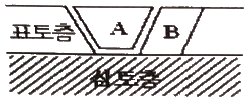
- A부분의 흙을 채취한다.
- A와 B부분의 흙을 1:1로 혼합하여 채취한다.
- A와 B부분의 흙을 1:2로 혼합하여 채취한다.
- A부분을 제거한 다음 B부분의 흙을 채취한다.
(정답률: 89%)
24. 다음은 자외선/가시선 분광법을 적용한 불소 측정에 관한 내용이다. ( )안에 옳은 내용은?
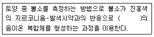
- 무색
- 청색
- 황갈색
- 적자색
(정답률: 81%)
25. 다음은 자외선/가시선 분광법을 적용한 6가 크롬 정량에 관한 내용이다. ( )안에 옳은 내용은?
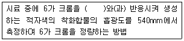
- 피리딘-피라졸론
- 디페닐카르바지드
- 디에틸디오카르바민산은
- 메틸디메톤
(정답률: 80%)
26. 시험총직에 대한 내용 줄 틀린 것은?
- 십억분율은 μg/kg으로 표시하며 1 ppm의 1/1000 이다.
- “정확히 단다”라 함은 규정된 양의검체를 취하여 분석용 저울로 0.1mg까지 다는 것을 말한다.
- “정확히 취하여”라 함은 규정한 양의 검체 또는 시액을 홀피펫으로 눈금까지 취하는 것을 말한다.
- 감압이라 함은 따로 규정이 없는 한 15mmH2O 이하를 말한다.
(정답률: 83%)
27. 다음은 토양 시료 채취 후 시료의 조제 방법 중 수소이온농도, 불소 및 금속류 시험용 시료 조제에 관한 내용이다. ( )안에 옳은 것은?
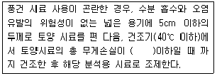
- 4시간 동안 5%(중량 기준)
- 8시간 동안 5%(중량 기준)
- 12시간 동안 5%(중량 기준)
- 24시간 동안 5%(중량 기준)
(정답률: 44%)
28. 다음은 정도보증/정도관리에 관한 내용 중 검정곡선의 작성 및 검증에 관한 사항이다. ( )안에 옳은 것은?
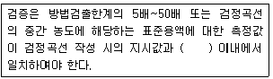
- 5%
- 10%
- 15%
- 25%
(정답률: 81%)
29. 다음 중 pH 표준용액으로 사용하는 수산화칼슘 표준용액으로 적합한 것은? (단, 25℃ 포화용액)
- 0.01M
- 0.02M
- 0.025M
- 0.⑤M
(정답률: 40%)
30. 저장물질이 없는 누출검사대상시설의 누출검사방법인 가압시험법의 시험오류 원인이 아닌 것은?
- 누출검사대상시설 이외의 연결관 및 연결부의 오류로 인한 누출
- 최저 설정압력의 오류
- 시험압력 유지시간이 너무 짧을 때
- 측정기간 중 과도한 온도변화에 의한 내용물의 체적변화
(정답률: 76%)
31. 토양의 수분함량 측정에 관한 설명으로 옳지 않은 것은?
- 시료를 1⑤~110℃에서 2시간 이상 건조하고 데시케이터에서 식힌 후 항량으로 하고 무게를 정확히 단다.
- 토양 중 수분을 0.1%까지 측정한다.
- 시료는 24시간 이내에 증발처리를 하여야 하며 최대한 7일을 넘기지 말아야 한다.
- 시료를 보관하여야 할 경우 미생물에 의한 분해를 방지하기 위하여 0~4℃로 보관한다.
(정답률: 80%)
32. 저장물질이 있는 누출검사대상시설-기상부의 시험법 중 미가입법 시험의 판정기준은?
- 미가압 시험결과, 누출검사대상시설내의 압력강하량이 2mmH2O를 초과하면 불합격으로 한다.
- 미가압 시험결과, 누출검사대상시설내의 압력강하량이 4mmH2O를 초과하면 불합격으로 한다.
- 미가압 시험결과, 누출검사대상시설내의 압력강하량이 6mmH2O를 초과하면 불합격으로 한다.
- 미가압 시험결과, 누출검사대상시설내의 압력강하량이 8mmH2O를 초과하면 불합격으로 한다.
(정답률: 79%)
33. 다음은 토양 내 시안을 자외선/가시선 분광법으로 측정할 때에 관한 내용이다. ( )안에 옳은 내용은?
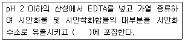
- 클로라민 T 용액
- 수산화나트륨 용액
- 피리딘ㆍ피라졸론 용액
- 황산제이철암모늄 용액
(정답률: 76%)
34. 토양시료의 수분측정결과 다음과 같은 자료를 얻었다. 수분함량은? (단, 증발접시의 무게(W1) : 30.257g, 건조 전 증발접시와 시료의 무게(W2 : 52.498g, 건조 후 증발접시와 시료의 무게(W3) : 45.521g)
- 31.4%
- 34.6%
- 37.2%
- 39.4%
(정답률: 72%)
35. 총칙의 내용 중 온도에 관한 설명으로 옳지 않은 것은?
- 열수는 약 100℃
- 냉수는 15℃ 이하
- 온수는 50℃~60℃
- 찬 곳은 따로 규정이 없는 한 0℃~15℃
(정답률: 74%)
36. 석유계총탄화수소(TPH)의 분석(기체크로마토그래피)을 위한 전처리에 사용되는 속슬레 추출장치의 구성으로 틀린 것은?
- 유리재 여과조
- 냉각장치
- 농축장치
- 가열장치
(정답률: 49%)
37. 다음은 토양오염관리대상시설지역에서의 시료채취지점 선정에 관한 내용이다. ( )안에 옳은 내용은? (단, 부지 내, 지상저장시설 기준)
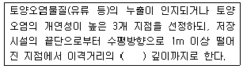
- 1.2배
- 1.5배
- 2.0배
- 2.5배
(정답률: 80%)
38. 다음은 토양의 pH를 측정(유리 전극법)하기 위한 분석절차에 관한 내용이다. ( )안에 옳은 내용은?
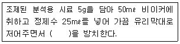
- 10분
- 15분
- 30분
- 1시간
(정답률: 86%)
39. 유기인화합물을 기체크로마토그래피로 정량할 때 정량한계는?
- 각 항목별 0.01mg/kg
- 각 항목별 0.⑤mg/kg
- 각 항목별 0.1mg/kg
- 각 항목별 0.5mg/kg
(정답률: 24%)
40. 배관시설에 대한 누출검사방법으로 가압 및 미감압시험법 적용시 검사기기 및 기구 중 안전장치에 관한 내용으로 옳은 것은?
- 시험압력의 1.1배 부근에서 작동할 수 있는 안전밸브를 갖추어야 한다.
- 시험압력의 1.3배 부근에서 작동할 수 있는 안전밸브를 갖추어야 한다.
- 시험압력의 1.5배 부근에서 작동할 수 있는 안전밸브를 갖추어야 한다.
- 시험압력의 1.8배 부근에서 작동할 수 있는 안전밸브를 갖추어야 한다.
(정답률: 76%)
3과목: 토양 및 지하수 오염정화 기술
41. 바이오스파장의 장점으로 틀린 것은?
- 휘발보다 생분해가 주요 제거 메카니즘이므로 배출가스처리가 필요 없을 수 있음
- 오염물질의 이동 및 확산 우려가 없음
- 지하수의 부가적인 처리가 없음
- 지상의 영업 및 활동에 방해 없이 정화작업 수행
(정답률: 67%)
42. 유기화학물질의 생분해능은 화합물의 분자구조에 크게 의존한다. 다음 조건 중 대상 오염물질이 일반적으로 난분해성 경향을 갖게 하는 조건이 아닌 것은?
- 분자내에 많은 수의 할로겐원소를 함유하는 화합물
- 가지구조가 많은 화합물
- 물에 대한 용해도가 낮은 화합물
- 원자의 전하차가 작은 화합물
(정답률: 87%)
43. 지하수면 아래 대수층이 TCE 오염운에 의해 오염되었다. 오염 대수층의 체적은 20000m3이고 매질의 공극률이 0.3이며, 오염운 내 지하수의 평균 TCE 농도가 2.0mg/L 이라면, 오염운의 지하수 내에 존재하는 TCE 총량은?
- 4.0kg
- 8.0kg
- 12.0kg
- 16.0kg
(정답률: 72%)
44. 미생물의 종류별 탄소원과 에너지원의 연결로 옳지 않은 것은? (단, 탄소원-에너지원)
- 화학합성 자가영양 : CO2 - 유기물의 산화환원반응
- 화학합성 종속영양 : 유기탄소 - 유기물의 산화환원반응
- 광합성 종속영양 : 유기탄소 - 빛
- 광합성 자가영양 : CO2 - 빛
(정답률: 70%)
45. 디젤로 오염된 오염 부지(20m×10m×5m)의 토양 평균 공극률이 0.3 이다. 바이오벤팅법을 이용하여 오염부지를 정화하는 경우, 오염 부지 공극체적(pore volume)의 100배의 공기가 필요한 것으로 조사되었다. 오염부지에 주입하는 공기량이 300m3/일 이라면, 바이오벤팅법을 이용하여 복원하는데 걸리는 운전시간은? (단, 지속적인 주입으로 가정할 것)
- 30일
- 60일
- 90일
- 100일
(정답률: 41%)
46. 지중 내에 직류전기를 공급하여 지반으로부터 오염물질을 추출하는 기술의 장단점으로 틀린 것은?
- 지반 매트릭스 자체에 미치는 영향이 정확하게 규명되지 않는 단점이 있음
- 염이나 2차 광물의 침전으로 효율이 상승되는 장점이 있음
- 오염지역 복원이 영구적인 장점이 있음
- 오염된 지중용액을 집수정으로부터 쉽게 추출할 수 있는 장점이 있음
(정답률: 54%)
47. 오염부지 내 TPH 초기오염농도 4000mg/kg 이 120일 후에 2000mg/kg으로 저감 되었다면, 1차 반응속도 속도상수는?
- 0.0037/day
- 0.0042/day
- 0.0⑤1/day
- 0.0⑤8/day
(정답률: 65%)
48. 자일렌 100mg/L의 농도로 오염된 지하수 3000m3을 처리하기 위해 필요한 활성탄의 양은? (단, 자일렌에 대한 활성탄의 흡착능 0.0789g-Xylenes/g-carbon)
- 760kg
- 1.4t
- 2.3t
- 3.8t
(정답률: 57%)
49. Soil Flushing 에 관한 설명으로 옳지 않은 것은?
- 휘발성 유기화합물질, 준휘발성 유기화합물질의 처리시에는 경제성이 떨어진다.
- 세정용액에 의해 2차오염이 유발될 수 있다.
- 투수성이 낮은 토양에서는 처리하기가 어렵다.
- 중금속 오염토양처리에는 효과가 없다.
(정답률: 70%)
50. 오염토양 열처리 프로세스의 종류 중 장치용적에 비해 비교적 넓은 열전달 표면적이 존재하며 같은 용량의 장치에 비해 장치가 작고 열전달효율이 높으나, 고형물의 온도가 최대허용 가능한 유체의 온도에 의해 제한되는 것은?
- 로터리탈착장치
- 열스크루
- 유동상탈착장치
- 마이크로파 탈착장치
(정답률: 70%)
51. 오염지하수를 반응벽체로 처리하고자 한다. 반응벽체 내 지하수 통과 선속도가 2m/day 이며, 반응벽체 내 체류시간이 6시간이 되어야 할 경우 반응벽체의 두께는 얼마가 필요한가?
- 0.5m
- 1.0m
- 1.5m
- 2.0m
(정답률: 66%)
52. 오염된 토양처리를 위한 자연저감법의 장단점으로 틀린 것은?
- 정화에 따른 부산물이 없는 장점이 있음
- 수용체로 오염물질 확산 진행시 효과적으로 적용 가능한 장점이 있음
- 부지접근 방지 및 부지사용금지 등의 조치가 필요한 단점이 있음
- 자연저감 기간 중 시스템 내 물리 화학적 특성변화가 발생되어 오염물질의 확산을 야기할 수 있는 단점이 있음
(정답률: 57%)
53. 벤젠(C6H6) 2kg으로 오염된 토양을 원위치 생물학적복원기술로 정화하려한다. 벤젠이 완전 분해되는데 필요한 산소를 과산화수소(H2O2)로 공급하고자 한다. 필요한 과산화수소의 양(kg)은?
- 7kg
- 9kg
- 11kg
- 13kg
(정답률: 34%)
54. 분자식이 C6H12O6인 포도당 3000g이 완전 산화할 때 소모되는 이론 산소량은?
- 약 130g
- 약 180g
- 약 280g
- 약 320g
(정답률: 60%)
55. 벤젠의 농도가 6.0mg/L인 지하수에서 미생물의 호기성분해에 의하여 분해가 일어나고 있다. 이 대수층의 산소농도가 6.0mg/L 이며 산소 소비율이 (3mg/L-02)/(1mg/L-벤젠)인 경우 분해 후 최종 벤젠 농도(mg/L)는? (단, 다른 곳으로 부터의 산소공급은 없다고 가정)
- 5
- 4
- 3
- 2
(정답률: 40%)
56. 열탈착 기술에서 오염물질의 특성에 따른 탈착 속도에 대하여 틀리게 설명한 것은?
- 유기물질의 분자량이 클수록 탈착속도가 빠르다.
- 토양층이 깊어질수록 탈착속도는 감소한다.
- 유기물질의 휘발성이 작을수록 탈착속도가 느리다.
- 비공극성 입자의 경우 탈착속도는 초기에 크고 빠르게 일어난다.
(정답률: 83%)
57. 기름의 입경은 0.2mm, 기름의 비중은 0.94g/cm3, 물의 비중은 1g/cm3, 물의 점성도는 0.01g/cmㆍsec 일 때 기름의 부상속도(cm/min)는? (단. Stokes의 법칙을 이용)
- 5.84
- 6.84
- 7.84
- 8.84
(정답률: 57%)
58. TCE(Trichloroethylene)로 오염된 지하수를 오존으로 처리하고자 한다. 처리대상 지하수로 예비실험을 한 결과 1.4 mg/L-min의 오존으로 1시간 처리 시 환경기준에 적합한 제거율을 보였다. 지하수 오염농도가 150 mg/L이고 처리해야 할 지하수의 유량이 2000L/min일 경우 환경기준에 적합하도록 처리하기 위한 최소 오존 필요량은?
- 약 242 kg/day
- 약 318 kg/day
- 약 423kg/day
- 약 538 kg/day
(정답률: 64%)
59. 오염토양의 불용화처리법(화하적 처리) 중 황화나트륨을 첨가하여 처리할 수 있는 오염물질로 가장 적절한 것은?
- 비소 화합물
- 납 화합물
- 6가크롬 화합물
- 시안 화합물
(정답률: 48%)
60. 생물학적 복원기술에 관한 설명 중 틀린 것은?
- 저농도 및 광범위한 오염에 적합하다.
- 유해한 중간물질을 만드는 경우가 있어 분해생성물의 유무를 조사할 필요가 있다.
- 다양한 물질에 의해 오염되어 있는 경우에도 별도의 기술개발이 필요 없다.
- 약품을 많이 사용하지 않기 때문에 2차 오염이 적다.
(정답률: 75%)
4과목: 토양 및 지하수 환경관계법규
61. 토양보전기본계획을 수립할 때 포함되어야 할 사항과 가장 거리가 먼 것은?
- 토양정화 및 정화된 토양의 이용에 관한 사항
- 토양정화를 위한 기술인력의 교육 및 양성에 관한 사항
- 토양보전에 관한 시책방향
- 토양오염의 정화 및 복원 현황
(정답률: 54%)
62. 토양정화업의 등록요건 중 장비기준으로 거리가 먼 것은?
- 휴대용 가스측정장비 1식(휘발성 유기화합물질, 산소, 이산화탄소 및 메탄의 측정이 가능할 것)
- 현장용 수질측정기 1식(수소이온농도, 수은, 전기전도도, 용존산소 및 산화환원전위의 특정이 가능할 것)
- 지하수위측정기
- 시료채취기 1대(깊이 4m 이내 시료채취가 가능할 것)
(정답률: 86%)
63. 보관, 운반 및 정화 등의 과정에서 오염토양을 누출ㆍ유출시킨 자에 대한 벌칙 기준은?
- 500백만원 이하의 벌금
- 1천만원 이하의 벌금
- 1년 이하의 징역 또는 1천만원 이하의 벌금
- 2년 이하의 징역 또는 2천만원 이하의 벌금
(정답률: 72%)
64. 다음은 특정토양오염관리대상시설 부지에서의 시료채취 방법에 관한 내용이다. ( )안에 옳은 내용은? (단, 종류가 같은 토양오염물질인 경우)
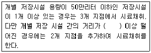
- 10m
- 30m
- 50m
- 100m
(정답률: 75%)
65. 특별자치도지사ㆍ시장ㆍ군수ㆍ구청장은 환경부령으로 정하는 바에 따라 특정토양오염관리대상시설의 설치자에게 감독상 필요한 자료의 제출을 명할 수 있으며 소속 공무원으로 하여금 특정토양오염관리대상시설에 출입하여 토양오염방지시설의 설치, 토양오염조사 및 그 결과의 보존여부등을 검사하게 할 수 있다. 이에 따른 공무원의 출입ㆍ검사를 거부ㆍ방해 또는 기피한 자에 대한 과태료 기준은?
- 200만원 이하의 과태료
- 300만원 이하의 과태료
- 500만원 이하의 과태료
- 1000만원 이하의 과태료
(정답률: 57%)
66. 특별자치도지사ㆍ시장ㆍ군수ㆍ구청장은 오염토양개선사업 전부 또는 일부의 실시를 그 오염원인자에게 명할 수 있다. 이여 필요하다고 인정하면 환경부령으로 정하는 토양관련전문기관으로 하여금 오염토양 개선사업의 지도ㆍ감독하게 할 수 있다. 위에서 언급한 환경부령으로 정하는 토양관련전문기관은?
- 시ㆍ도 보건환경연구원
- 국립환경과학원
- 유역 환경청
- 한국환경공단
(정답률: 87%)
67. 다음은 토양오염검사수수료에 관한 내용 중 누출검사 수수료(배관부)에 관한 내용이다. ( )안에 옳은 내용은?
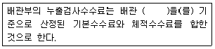
- 1라인(시점 및 종점)
- m 당(누출 지점)
- m2 당(누출 면적)
- 1기 당(탱크)
(정답률: 76%)
68. 다음 중 토양보전대책지역의 토양보전대책을 위한 계획에 포함되는 오염토양개선사업의 종류와 가장 거리가 먼 것은?
- 객토 및 토양개량제의 시용 등 농토배영사업
- 오염된 수로의 준설사업
- 오염토양 처리기술 개발ㆍ개선사업
- 오염물질의 흡수력이 강한 식물식재사업
(정답률: 59%)
69. 토양환경평가기관의 지정기준(장비) 중 자가동력시추기에 관한 내용으로 옳은 것은?
- 타격식이나 나선형식으로 시추깊이가 최소 2m 이상일 것
- 타격식이나 나선형식으로 시추깊이가 최소 4m 이상일 것
- 타격식이나 나선형식으로 시추깊이가 최소 6m 이상일 것
- 타격식이나 나선형식으로 시추깊이가 최소 8m 이상일 것
(정답률: 77%)
70. 다음 오염물질 중 토양오염우려기준이 나머지와 다른 것은? (단 1지역 기준)
- 카드뮴
- 페놀
- 수은
- 납
(정답률: 44%)
71. 다음은 토양보전대책지역의 지정기준에 관한 내용이다. ( )안의 내용으로 옳은 것은?
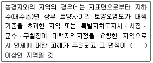
- 1만 제곱미터
- 2만 제곱미터
- 3만 제곱미터
- 5만 제곱미터
(정답률: 67%)
72. 다음은 오염토양의 반출절차 및 방법에 관한 내용이다. ( )안에 옳은 내용은?
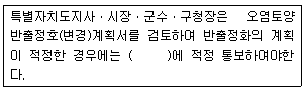
- 7일 이내
- 10일 이내
- 15일 이내
- 30일 이내
(정답률: 56%)
73. 환경부장관이 토양관리단지 조성계획을 수립할 때 포함되어야 하는 사항과 가장 거리가 먼 것은?
- 단지 조성 주체 및 운영 계획
- 오염토양 정화처리 용량
- 환경보전계획
- 조성 대상 부지의 확보 방안
(정답률: 19%)
74. 지하수를 공업용수로 이용하는 경우 특정유해물질에 대한 지하수 수질기준으로 옳지 않은 것은?
- 카드뮴 : 0.02 mg/L 이하
- 비소 : 0.1 mg/L 이하
- 시안 : 0.02 mg/L 이하
- 수은 : 0.01 mg/L 이하
(정답률: 25%)
75. 토양관련전문기관 및 토양정화업 기술인력 교육계획을 수립하여 환경부장관에게 제출하여야 하는 자는?
- 국립환경과학원장
- 국립환경인력개발원장
- 시도보건환경연구원장
- 환경보전협회장
(정답률: 75%)
76. 다음은 토양오염이 발생한 해당 부지 안에서 오염토양의 정화가 곤란할 때 번출하여 정화할 수 있는 경우에 관한 기준이다. ( )안에 내용으로 옳은 것은? (단, 토양오염도가 토양오염우려기준을 넘는 토양 기준)
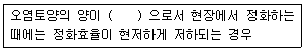
- 5세제곱미터 미만
- 10제곱미터 미만
- 30세제곱미터 미만
- 50세제곱미터 미만
(정답률: 59%)
77. 토양환경평가를 위한 조사 구분 중 시료의 채취 및 분석을 통한 토양오염 여부를 조사하는 것은?
- 정밀조사
- 기초조사
- 정도조사
- 개황조사
(정답률: 60%)
78. 특정토양오염관리대상시설의 변경신고를 하여야 하는 경우에 해당되지 않는 것은?
- 대표자가 변경되는 경우
- 사업장의 명칭이 변경되는 경우
- 사업장의 위치가 변경되는 경우
- 특정토양오염관리대상시설에 저장하는 오염물질을 변경하는 경우
(정답률: 63%)
79. 토양정화업의 등록요건 중 반입정화시설에 대한 기준으로 옳은 것은?
- 정화시설 200제곱미터 이상, 보관시설 200제곱미터 이상
- 정화시설 400제곱미터 이상, 보관시설 200제곱미터 이상
- 정화시설 200제곱미터 이상, 보관시설 400제곱미터 이상
- 정화시설 400제곱미터 이상, 보관시설 400제곱미터 이상
(정답률: 86%)
80. 다음은 토양정화업자의 준수사항에 관한 내용이다. ( )안에 옳은 내용은?
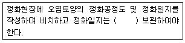
- 1년간
- 2년간
- 3년간
- 5년간
(정답률: 69%)